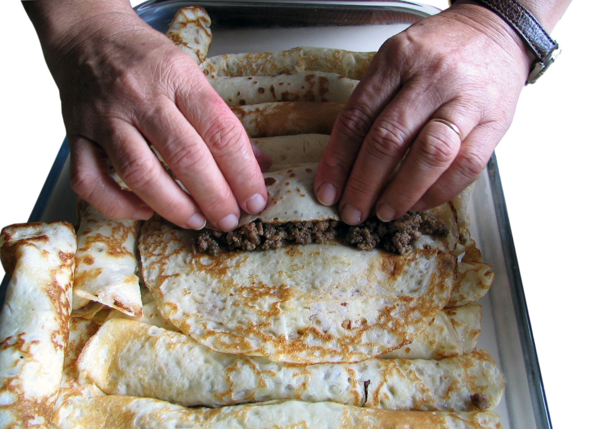
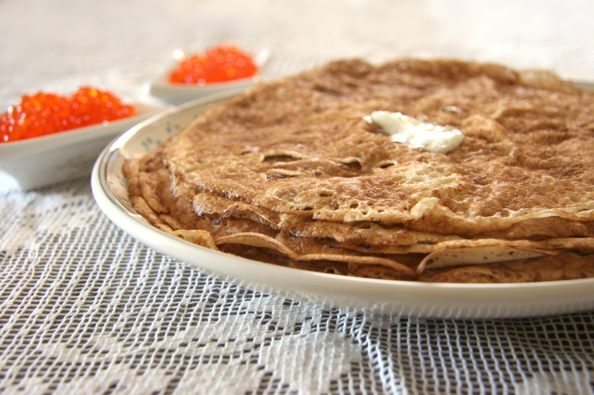

Pancake Making
What is a Pancake?
A pancake is a is a flat cake, often thin and round, prepared from a starch-based batter that may contain eggs,
milk and butter and cooked on a hot surface such as a griddle or frying pan, often frying with oil or butter.
Why I like pancake:
I like pancake so much because its very sweet and can be served or eaten
anytime during the day. It is also nutritious.
How to Make Pancake
Ingredients:
- flour
- baking powder
- salt
- sugar
- vegetable oil
- milk
- egg
Things that are needed:
- Whisk
- two mixing bowls
- pan or gridle
- laddle or measuring cup
- large spoon
- spatula
Steps to follow:
Mix flour, baking powder, salt, and sugar
In a medium-size mixing bowl or large glass measuring cup,
whisk together your dry ingredients (or follow directions for premade pancake mix).🙂
Mix milk, eggs, and oil
In a separate bowl, whisk together the wet ingredients (milk, eggs, vegetable oil, or melted butter)
until the egg is broken up (this will prevent overmixing in the next step).😊
Mix dry ingredients with wet ingredients
Add the wet ingredients to the bowl with the dry ingredients. Stir them together until you stop seeing flour.
Remember to not overmix, which makes the batter tough.😊
Pre-heat the pan or skillet
Turn your stove to medium-high heat and place a large skillet or griddle on the burner.
Tip: To test for temperature, sprinkle a few drops of water on the pan.
It’s hot enough when the droplets bubble up and evaporate.😣
Add oil to pan
Moisten a paper towel with vegetable oil and use it to lightly wipe the bottom of the pan.
This will keep the pancakes from sticking.😣
Pour the batter into the pan
For each pancake, gently pour 1/3 to 1/2 cup of batter into the pan, using a ladle or a measuring cup.
Use a spoon to spread the batter into a circle.
Tip: Add pancake fillings, like bananas or sliced peaches, in the circles of batter.🙂
Flip the pancakes when the bubbles burst
Once bubbles begin to pop in the center of the pancake, it is ready to be turned.
Insert the entire spatula under the middle of the pancake.
Lift the pancake quickly about an inch off the surface of the pan and flip it over.
Tip: If you are making pancakes for a large crowd, place them on a wire rack over a baking sheet (to prevent sogginess),
and keep pancakes in the oven on low heat (approximately 200 degrees F to 225 degrees F) until you are ready to serve.😛


Do you want to know other slightly different ways of making pancake?
check here👇
I guess you found some differences after going through the other recipes in the above websites. Do you think such difference should be added to my recipe to enhace it?
send your opinion to this email.